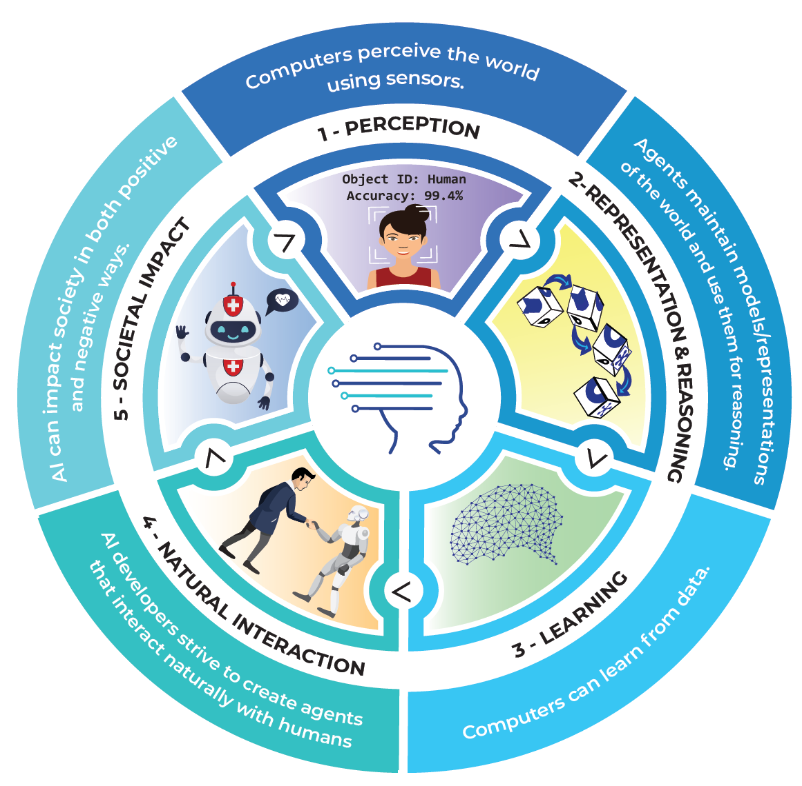

Haz clic en la imagen para más información

Percepción Los ordenadores perciben el mundo utilizando sensores
Representación y razonamiento Los agentes mantienen modelos o representaciones del mundo y las usan para razonar.
Aprendizaje Los ordenadores pueden aprender a partir de datos.
Interacción natural Hacer que los agentes interactúen con los humanos de manera fluida es un desafío enorme para los desarrolladores de IA.
Impacto social La IA puede tener un impacto tanto positivo como negativo sobre la sociedad.

Este obra está bajo una licencia de Creative Commons Reconocimiento-NoComercial 4.0 Internacional.